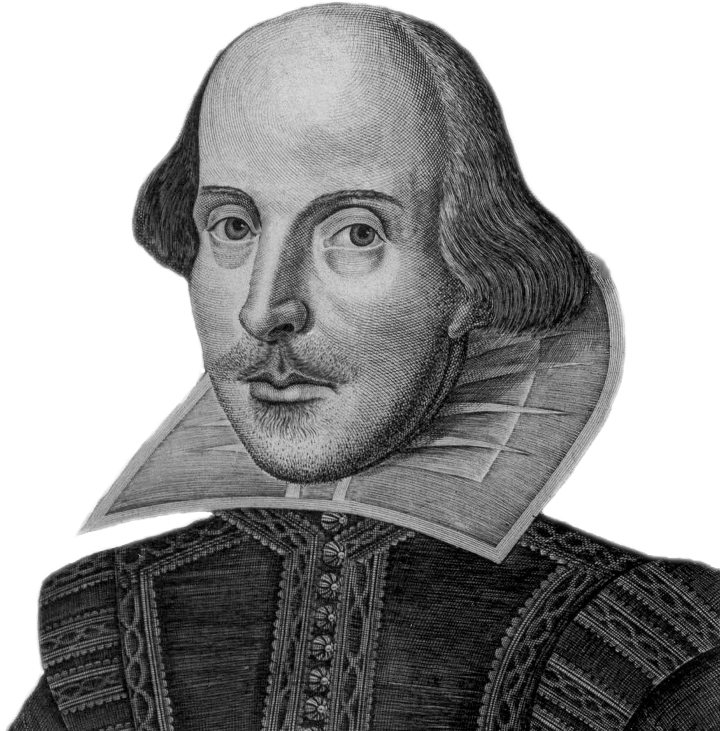

I had to make a poem in my 11th grade English class. The hardest part of my poem was the rhyme scheme. And finding a topic was pretty hard to come up with. The best part was when I was in the zone and I had a general idea of where the poem was going. A sonnet is a poem that can follow a variety of rhyme schemes and different sets of rules but the one I used was a shakespearean sonnet. Shakespeare follows the scheme A B A B C D C D E F E F and the couplet G G.
“Poodle”I once had a pet named DogOne day we went for a walkHe after a green frogChased him all the way to BangkokI ended up in a place called Khao SanWomen offering me fried noodlesBut there I met an old manAsking if I had found my poodleTired and wanting to come backWalking back all sadHopping back into my CadillacThe sound of a frog made me feel sadCroak sounding louder down the roadOut comes a poodle licking a blue toad
